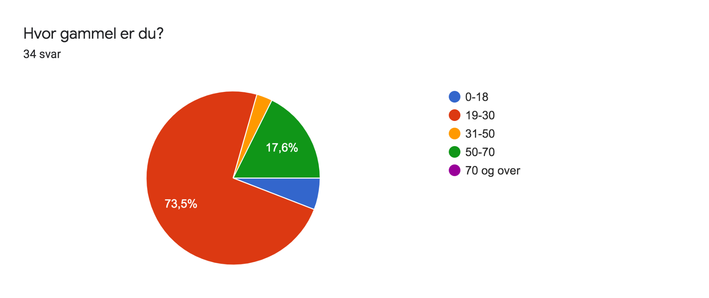

P4
10-nov-19
Administrative details:
- Klient: Norsk datateknikk AS
- Kontaktperson: Anders Nilsen, ansatt som programvareingeniør og var med på starte oppbedriften.
- Webadresse: norskdatateknikk.no
Testing Document:
Testene ble gjennomført mens vi fremdeles jobbet med noen siste finjusteringer på designet på nettsiden. Vi lagde en google form for å hovedsaklig teste funksjonaliteten til nettsiden og brukervennligheten. Dette var fordi vi tenkte oss at de vi ville nå ut til gjennom våre sosiale kanaler hovedsakelig ikke var folk som jobbet med elektronikk og derfor ikke kunne si så mye om informasjonen som ble formidlet. Derfor valgte vi å bruke de til å teste blant annet navigasjon rundt på nettsiden og de forskjellige funksjonene. Vi spurte om inntrykket de fikk av Norsk Datateknikk gjennom besøket på nettsiden, hvordan det var å komme seg rundt på siden og også hvilke funksjoner de fikk testet.
Link til spørreskjema: https://forms.gle/BG1qL5CUd7YgTt5K6
Vi gjennomførte også live-tester. Da tok vi utgangspunkt i spørsmålene fra Google Forms samtidig som vi hadde mulighet til å se hvordan de navigerte rundt på siden og stille tilleggsspørsmål der det var behov for det. Testpersonene fikk også mulighet til å kommentere på ting imens de navigerte rundt på siden.
Test Audience:
Vi sendte ut skjemaet til venner og familie via facebook for å treffe et bredt spekter av brukere. Totalt fikk vi 34 svar.  Vi valgte også å snakke med noen som jobbet innenfor samme bransje som Norsk Datateknikk for å få et større innblikk i om informasjonen på siden og måten den var bygget opp på, appellerer til de innenfor elektronikk bransjen, og høre hva vi eventuelt kan gjøre annerledes. Vi fikk testet en professorer, en førsteamanuensis og en student alle med kompetanse innen elektronikk.
Testing Platforms:
I Google Forms-testen fikk vi deltakerne til å svare på hvike type enhet de brukte. 17 personer svarte at de testet nettsiden på mobil. 16 stykker testet nettsiden på enten PC eller mac, og en bruker testet på nettbrett, mobil og mac. De vi "live-testet" testet nettsiden i chrome, på en mac som de lånte av oss.
Feedback Summary:
Oversikt og navigering:
Gjennomsnittlig svar på hvor enkelt det var å navigere seg rundt på siden på skala fra 1 til 6 var 5,4. Ut ifra det kan man tolke at de fleste synes det var enkelt å navigere seg rundt på siden. Fra noen av de fysiske brukertestene fikk vi respons på at det kunne være vanskelig for folk å skjønne at man skulle scrolle på forsiden, ettersom at videoen tar opp hele skjermen. 30 av 34 sa at de hadde scrollet på hjemmesiden, så man kan tolke at de fleste forsto dette, men likevel burde det kanskje blitt tydeliggjort enda mer ved å f.eks redusere høyden på headeren eller sette inn en pil som peker nedover. Ellers forsto alle hvor de kunne finne informasjon om tidligere prosjekter, kontakt, referanser, osv, og hva de ulike delene av nettsiden betydde.
Brukersitater:
“Jeg skjønte ikke umiddelbart at man kunne scrolle ned på
hjem-siden.”
Design:
Vi fikk god respons på generell design av nettsiden. Mange av de positive kommentarene i spørreskjema var rettet mot dette. Det var likevel en del tilbakemeldinger som kan jobbes med. For eksempel ble det påpekt i "live-test" nr.2 at teksten er veldig liten under overskriftene. En annen tilbakemelding vi fikk var at flere forventet at man skulle få mer informasjon dersom man trykket på ett av prosjektene på prosjekter siden, noe man ikke får. Vi fikk gjennomsnittlig gode tilbakemeldinger på inntrykket folk fikk av Norsk Datateknikk, og man kan anta at dette delvis kommer av at nettsiden er designet på en profesjonell og pålitelig måte.
Brukersitater:
“Veldig bra! Ser skikkelig stilig og profesjonell ut”
“Veldig kul side!!! Liker fargeprofilen :)”
Innhold:
Vi fikk svar på at mange synes at de fant fram til det de trengte. Gjennomgående tilbakemeldinger vi fikk var at folk manglet litt informasjon om hvem de var og hva de egentlig gjør. På spørsmålet “Hvis du lette etter hjelp innen elektronikk, kunne du tenkt deg å bruke tjenestene til Norsk Datateknikk basert på inntrykket ditt avnettsiden?” svarte 44,4% “Trenger mer informasjon”. Dette kan skyldes av at vi ikke hadde bilder av dem og utfyllende tekst om prosjektene deres og kundene deres. Norskdatateknikk har ikke avsluttet noen prosjekter enda så det er derfor ikke så mye å legge til her enda. Vi valgte å bruke innplaceholder-tekst- og bilder på nettsida slik at bedriften kan legge inn dette selv når de tar over siden.
Testresultater fra brukertest via google forms :
Hvilket inntrykk fikk du av norsk datateknikk? (Skala fra 1-6):
| Alternativ | Score |
|---|---|
| Profesjonalitet | 5,1 |
| Pålitelighet | 4,9 |
| Innovative | 4,6 |
| Hvor enkelt var det å finne ut hvordan du kan ta kontakt med bedriften? | 5,7 |
| Hvor lett var det å lese skriften? | 5,2 |
| Hvor lett var det å navigere seg rundt på siden? | 5,4 |
Hvilke funksjoner på siden testet du? (Avkryssing)
| Alternativ | Antall Personer |
|---|---|
| Bytte språk | 22 |
| Navigere mellom sidene i top baren | 32 |
| Sende inn kontaktskjema | 2 |
| Hoovre over bilder på prosjektsiden | 21 |
| Scrolle på forsiden | 30 |
| Besøke nettsiden til tidligere samarbeidspartnere | 6 |
| Trykke på logo for å komme tilbake til start | 14 |
| Skalering av nettsiden | 12 |
75% av de som testet siden via google forms har ikke hatt behov for elektronikkhjelp.
Ni personer hadde hatt bruk for elektronikkhjelp tidligere, og av disse kunne fem tenkt seg å få hjelp av norsk datateknikk, mens fire følte de hadde behov for mer info om bedriften.
Skriftlige tilbakemeldinger:
“Veldig kul side!!! Liker fargeprofilen:)”
“Ser kjempefint ut, men den er ikke alltid godt tilpasset en veldig stor skjerm.
Spesielt kontaktskjemaet ser rart ut når det blir veldig bredt. Anbefaler å bruke media
queries for skjermbredder som er større enn en vanlige skjermer. Test på datasalen hvis
ingen av dere har stor skjerm. En annen liten detalj er at jeg kunne ønske at siden ikke
lastet pånytt når jeg klikker hjem når jeg allerede er på hjem-siden. Videoen starter på
nytt og det ser litt hakkete ut.
Jeg skjønte også ikke umiddelbart at man kunne scrolle
ned på hjem-siden. Endring av språk er sykt smooth.”
Tilbakemeldinger fra live-tester:
Testperson 1
Testperson 1 var en førsteamanuensis av den eldre garde, vedkommende testet nettsiden
i chrome på en lånt mac.
Det virket som det var uvant å bruke mac. Vi måtte stille
et konkret spørsmål om navigasjon i top baren for at vedkommende skulle gå videre til en
annenside. Det kan tenkes at dette er delvis på grunn av alder og at operativsystemet var
ukjent.
Testperson 1 lese nøye gjennom teksten og så på de grafiske ikonene på forsiden. Han uttrykte at han var litt skeptisk til instrumenteringsymbolet fordi det kan minne om frekvens.
Testperson 1 synes nettsiden er lett å lese med tanke på skriftstørrelse og farge på skrift mot bakgrunnen. Han er også positiv til at det ikke er så mye tekst fordi det gjør det lettere å lese. Testperson 1 liker at ting er delt opp i elementer med mye luft rundt fordi da er det ikke flere ting som konkurrerer om oppmerksomheten til brukeren av nettsiden samtidig.
Bedriften fremstår troverdige og pålitelige i følge testperson 1. Han er imidlertid usikkerpå hvor innovative bedriften fremstår. Det fremgår av nettsiden at det er et konsulentbyrå, og testperson 1 kunne benyttet seg av deres hjelp.
Testperson 2
Testperson 2 var en professor i 40-årene. Han testet også siden med chrome på en mac han lånte av oss. Testperson 2 var engelsktalende, og han oppdaget med en gang at det var mulighet for å bytte språk på siden, så under testen så han på den engelske versjonen. I den engelske versjonen er det en del placeholdertekst.
Testperson 2 synes det var vanskelig å skjønne at man kan scrolle på forsiden fordi bildet dekker hele skjermen, og det er heller ikke en pil eller liknende som indikerer at man kan scrolle. Han kommenterer at han gjerne vil lese litt om bedriften før han evt tarkontakt.
Generelt mener testperson 2 at siden ser bra ut. Imidlertid, mener han at vi burde indikert mulighet for scrolling på flere av sidene ved for eksempel å minske whitespace på en slik måte at det som er under såvidt blir synlig for brukeren av nettsiden.
Testperson 2 mener også at det ikke er “about”-teksten som er relevant å se på den siden, men heller navnene på personen som jobber der, og derfor gjøre dette mer synelig. Han synes også at kontrasten mellom skriftstørrelsen på overskrift og vanlig tekst er litt for stor.
Testperson 2 er interessert i hvordan nettsiden ser ut på virkelig store skjermer og hvordan layouten på prosjektsiden blir etterhvert som bedriften utfører flere oppdrag.
Testperson 2 sa at bedriften fremstår profesjonelle og at han kunne benyttet seg av dem.
Testperson 3
Testperson 3 var en elektronikk-student i 20-årene. Han testet nettsiden med chrome lånt mac. Testperson 3 scroller raskt på forsiden, navigerer mellom sidene, zoomer inn påkartet og hovrer over bildene på prosjektsiden. Han sier at han hadde forventet at mankunne trykke på ikonene på forsiden og på bildene på prosjektsiden for å få mer informasjon. Ikonene er relevante og godt utformet. Når testperson 3 trykker på språkbytte knappen, skulle han ønske at han kunne trykke samme sted for å bytte tilbake igjen.
Testperson 3 er glad for at det er en referanse side. Det gjør at startupbedriften fremstår som seriøse. Han skulle gjerne sett at de hadde med uttalelser fra bedriftene de har jobbet med om hvordan samarbeidet foregikk. Det virker som det er lett å komme i kontakt med bedriften. Nettsiden er lett å navigere på og teksten er lett og lese. Han hadde vurdert å benytte seg av norsk datateknikk hvis han hadde hatt behov for det.
Your Response:
Mye av tilbakemeldingene handler om nettsidens utforming og design.
Vi kunne vurdert å tatt med flere bilder av de ansatte i bedriften, da det ble uttrykt et ønske om å bli bedre kjent med de som jobber i ND. Det var generelt litt mangel på informasjon. Det må bli opp til ND å utfylle slik at besøkende på siden får den informasjonen de trenger. For å ikke overfylle siden med info, bør det fokuseres på prosjekter og referanser, slik at besøkende får konkrete eksempler på hva som ND kan lage.
Vi kunne også lagt til enten en pop-up eller link til ny side når man trykker på bildene på Prosjekter siden. Dette gjorde vi ikke da bedriften ikke har nok prosjekter eller nok informasjon om prosjektene de arbeider med til at det er nyttig for dem på dette tidspunktet. Men det kan være noe de har bruk for i fremtiden.
Under brukbarhetstestene tok det litt tid før brukeren skjønte det var mulig å scrolle ned på siden, vi kunne for eksempel lagt til en liten pil, eller kutte litt på høyden, slik at man ser litt av innholdet som er lenger ned på siden. Denne endringen vil invitere til å scrolle nedover på siden og utforske mer.
Videre kunne vi også jobbet i større grad med et gjennomgående design gjennom hele nettsiden. Dette er noe vi har fokusert på i koden ved å bruke blandt annet classer for like elementer. Kontrast mellom tekst og bakgrunn er blant annet en ting vi burde ha testet mer. Som nevnt over var det også en del testere som kommentere at skriftstørrelsen var litt liten. Dette kunne vært testet i større grad på flere mennesker med f.eks. dårlig syn eller lignende.
Self Reflection:
Vi ønsket å jobbe med en reell kunde, og det har vært en god erfaring. Ved å ha en reell kunde ble arbeidet mer seriøst. Det gjorde også arbeidet mer motiverende fordi vi jobbet mot noe som skulle brukes av andre, og ikke bare bli levert. Mot slutten av prosjektet var det viktig å utvikle en god nettside med tanke på kunden, og ikke for å oppfylle krav fra faget. Vi tar med oss denne erfaringen og vil prøve å finne prosjekter som motiverer på samme måte i fremtiden. Gjennom prosjektet har vi hatt flere møter med kunden. Vi er en gruppe med studenter som ikke har laget noen nettside før, og vi kommer fra forskjellige bakgrunner, så det var viktig for oss å informere kunden om dette fra start av så forventningene til levert resultat skulle være reelle. Kunden har stort sett vært forståelsesfull og behandlet oss på en bra måte med respekt, dette har vi vært takknemlig for hele veien.
Sammarbeidet har fungert veldig bra og alle medlemmene av gruppen har godt en bra innsats i sin del av arbeidet. Vi har brukt git, sammen med github for å dele og merge kode. Vi ser at dette var en stor fordel og sparte oss mye tid. Dette er noe vi anbefaler alle som skal kode et gruppeprosjekt å utnytte
Vi er en gruppe som studerer ulike retninger her på ntnu, både Industriell design og Informatikk. Det har vært en fin erfaring å jobbe på tvers av linjene, og vi har utnyttet og delt kompetanse effektivt. Vi vil anbefale neste års studenter å gjøre det samme.